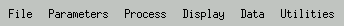
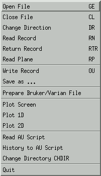Open File
Close File
Change Direction
Read Record
Return Record - Return the current (modified) record to the original file.
Read Plane - Read a specified plane from the 3D file.
Write Record - Write the current record to a new 1D file.
Save as ...
Read AU Script - Read a script form disk into the editor.
History to AU script - Dump all the scripts, that had been used to create this NMR file, to a new file on disk.
Change Directory - Change the current working dirctory.
Edit or view the processing parameters. Normally, parameters are set during the processing steps. However, parameters can also be set or edited by hand.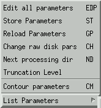
See for most parameters the processing of 1D files.
Spectral
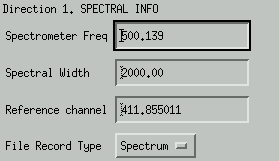Input FileSet some spectral parameters that are required for the use of correct axis units. The parameter File Record Type can be Spectrum or FID, and determines if the axis units are ppm or seconds. If File Record Type is FID, it will change to Spectrum after a Fourier transformation. However, when a new record is read from disk, File Record Type will be set to FID again.
Set some parameters that determine how the input file will be loaded. See RMDSP CorrectionGives the number off points that are prepended at the start of the FID, due to Bruker digital signal processing. A correction suggested by W. M. Westler and F. Abildgaard is applied during Window, Watwa and FT oprations.Linear prediction
Window
Water Wash
Fourier Mode
Hilbert Transform
Phase
Reverse
Baseline
Waterfit
Output File
Next processing dir
Truncation level
Edit all parameters
Store Parameters
Reload Parameters
Change raw disk parsUse only when you know exactly what you are doing. This option opens a low-level parameter editor (only when the new ND file type is used). This are the parameters that are stored on disk (and NOT the modified current parameters). For each direction a list of parameters is displayed. Each parameter consists of three items, 1) the identifier, 2) a character I (integer) or F (float), and 3) the value of the parameter. ONLY the value may be changed, or unpredictable things will happen. Parameters are stored to disk if the OK button is pressed, and the current parameters are overwritten by this new ones. NOT any type of parameter checking is performed, so proceed at your own risk.Contour parameters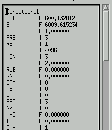
List Parameters
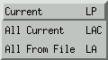
Current:
List all parameters in the 1D direction, that are currently activated.Spec Width = 2500.000
Refer chan = 1.000
PRE MODE = process real
R start-stop= 1 - 512
Window = sqr sine bell
Shift = 2.000
W start-stop= 1 - 512
FFT MODE = do FFT cx
Zero Fill = 0
BASEL. TYPE = do polynomial
# poly terms= 12
B start-stop= 0 - 0
POST MODE = automatic
OUTFILE MODE= new file
S start-stop= 0 - 0
All Current:
All From File:
List all parameters, either the current values, or the values that are stored with the file on disk (the 'old' values).T1 T2
Spec Freq.= 500.139 500.139
Spec Width = 2500.000 2500.000
Refer chan = 1.000 1.000
DSP shift = 0.000 0.000
PRE MODE = process real process real
R start-stop= 1 - 512 1 - 512
LP lpc type = LPC LPC
LP mode = forward forward
LP #poles = 0 5
LP size = 0 512
LP moveroots= no no
LP replace = none none
LP tolerance= 0 1e-07
LP gap st-sp= 0 - 0 0 - 0
LPstart-stop= 0 - 0 0 - 0
Window = sqr sine bell sqr sine bell
Shift = 2.000 2.000
Line Broad = 0.000 0.000
Gauss Broad = 0.000 0.000
Trapzium Wdw= 0 0
W start-stop= 1 - 512 1 - 512
Watwa shape = Cos^3 Cos^3
Watwa width = 0 64
Watwa shift = 0 0
FFT MODE = do FFT real do FFT cx
Zero Fill = 1 0
Scale 1st = 1.00 1.00
no hilbert no hilbert
PHASE = no phase no phase
no reverse no reverse
BASEL. TYPE = no baseline polynomal
L poly terms= 0 0
H poly terms= 0 12
B start-stop= 0 - 0 0 - 0
Waterfit pos= 0 0
Waterfit wid= 0 0
POST MODE = store real store real
OUTFILE MODE= new file new file
off_A, off_B= 0 - 0 0 - 0
S start-stop= 1 - 512 1 - 512
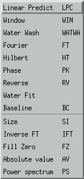
Linear Predict
Window
Water Wash
Fourier
Hilbert
Phase
Water Fit
BaselineSize
Reverse
Inverse FT
Fill Zero
Absolute value
Power spectrum
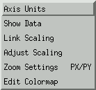Axis Units
Show Data
Link Scaling
Adjust Scaling
Zoom Settings - give new zoom settings in channel numbers.
Edit Colormap
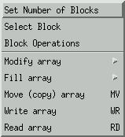
Enlarge the number of active blocks. From 4 to (at most) 9.
Select a block to work in. The default is block 1.
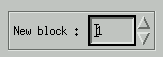
The menu option Block operations yields the following popup menu. With this menus, data can be copied from one block to another one. From Block gives the block number that contains the source data, and To Block the number of the data's destiny block.
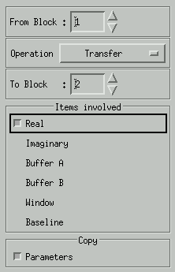The copy operation comes with some options.
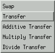
In the Items involved check box, the user can indicate which data arrays should be transfered. In a seperate box, the copying of the parameters can be requested.
- Swap - Swap the contents of both blocks
- Transfer - Copy with multiplication factor. TO = A * FROM
- Additive Transfer - TO = TO * A + FROM * B
- Multiply tranfer - TO = TO * A + FROM * B/NORM
- Divide Transfer - TO = TO * A / FROM * B
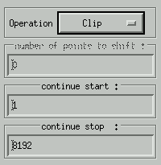
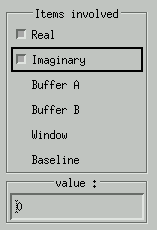
Copy the contents of one array to another array.
Command line: RD
Script: RD <array>, <filename>Read data from a 1D nmr file. This command is intended to include data into a spectrum that is already open. To that extend, NO parameters are read from the file. The file is opened, the data read, and the file is closed, all in one command. With the popup menu, the target array is chosen. If the file contains complex data, and a single array (e.g. real) is chosen, only the real data are copied into the array. If Real+Imag is selected, both the real and the imaginary data are imported from disk. However, if Real+Imag is chosen, and the file contains real data, only the real array is filled.
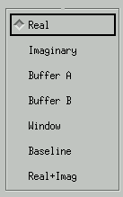
Command line: WR
Script: WR <array>, <filename>Write data to an 1D file. This can be the current 1D file, or one track from a multidimensional NMR file. It also can be data stored in buffer A or B, or in the Window or Baseline buffer.
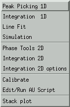Peak Picking 1D
Integration 1D
Line Fit
Simulation